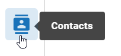

To add new contacts:
- Click the Settings icon
 in the top-right corner of the screen. The Settings icon is a global button that displays in every module of the
in the top-right corner of the screen. The Settings icon is a global button that displays in every module of the -
The System Manager opens. In the left pane of the System Manager, click Contacts.

- Click the
 button at the top of the screen to open the Create New Contact page.
button at the top of the screen to open the Create New Contact page. - Enter basic details for the contact as needed. All required fields are marked with an asterisk; all other entries are optional.
- When the details have been defined for the contact, click Save.
- Repeat these steps to define other contacts.